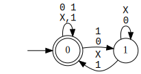
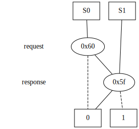
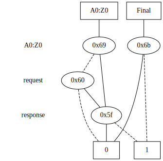

In this example, we will explore the C++ API to translate the DFA between different representations.
The code of this example can be found in the file examples/02_dfa_representation/dfa_representation.cpp. To build this example, you can run make dfa_representation_example.
#include <memory>
#include <sstream>
#include <string>
#include <vector>
#include <lydia/parser/ltlf/driver.hpp>
#include "automata/ExplicitStateDfa.h"
#include "automata/ExplicitStateDfaAdd.h"
#include "automata/SymbolicStateDfa.h"
#include "VarMgr.h"
#include "lydia/mona_ext/mona_ext_base.hpp"
int main(int argc, char ** argv) {
std::string request = "request";
std::string response = "response";
std::string formula_str = "G(request -> F(response))";
std::cout << "Input formula: " << formula_str << std::endl;
auto driver = std::make_shared<whitemech::lydia::parsers::ltlf::LTLfDriver>();
std::stringstream formula_stream(formula_str);
driver->parse(formula_stream);
whitemech::lydia::ltlf_ptr formula = driver->get_result();
std::cout << "Printing the DFA in textual form: " << std::endl;
std::cout << "Printing the DFA in MONA format..." << std::endl;
dfa.export_dfa("main.mona");
std::cout << "Exporting the explicit-state MONA DFA in DOT and SVG to files 'main.dot' and 'main.svg'..." << std::endl;
whitemech::lydia::print_mona_dfa(
dfa.dfa_,
"main",
);
std::shared_ptr<Syft::VarMgr> var_mgr = std::make_shared<Syft::VarMgr>();
var_mgr->create_named_variables({request, response});
std::cout <<
"Number of states: " << explicit_dfa_add.
state_count() << std::endl;
std::cout << "Exporting the explicit-state ADD DFA in DOT format to file 'main_add.dot'..." << std::endl;
explicit_dfa_add.
dump_dot(
"main_add.dot");
std::cout << "Exporting the symbolic-state DFA in DOT format to file 'main_symbolic.dot'..." << std::endl;
symbolic_dfa.
dump_dot(
"main_symbolic.dot");
return 0;
}
A DFA with explicit states and symbolic transitions represented in ADDs.
Definition: ExplicitStateDfaAdd.h:18
std::size_t state_count() const
Returns the number of states in the DFA.
Definition: ExplicitStateDfaAdd.cpp:117
static ExplicitStateDfaAdd from_dfa_mona(std::shared_ptr< VarMgr > var_mgr, const ExplicitStateDfa &explicit_dfa)
Constructs an explicit-state DFA in ADD representation from an explicit-state DFA.
Definition: ExplicitStateDfaAdd.cpp:44
void dump_dot(const std::string &filename) const
Saves the transition function of the DFA in a .dot file.
Definition: ExplicitStateDfaAdd.cpp:129
A DFA with explicit states and symbolic transitions.
Definition: ExplicitStateDfa.h:22
void dfa_print()
Print the explicit-state DFA.
Definition: ExplicitStateDfa.cpp:23
static ExplicitStateDfa dfa_of_formula(const whitemech::lydia::LTLfFormula &formula)
Construct an explicit-state DFA from a given formula using Lydia.
Definition: ExplicitStateDfa.cpp:31
int get_nb_variables()
Get the number of variables.
Definition: ExplicitStateDfa.h:70
A DFA with symbolic states and transitions.
Definition: SymbolicStateDfa.h:18
static SymbolicStateDfa from_explicit(const ExplicitStateDfaAdd &explicit_dfa)
Converts an explicit DFA to a symbolic representation.
Definition: SymbolicStateDfa.cpp:92
void dump_dot(const std::string &filename) const
Saves the symbolic representation of the DFA in a .dot file.
Definition: SymbolicStateDfa.cpp:162
In this example, we consider the DFA associated to the LTLf formula G(request -> F(response)).
Build a DFA from a LTLf formula
First, we define our LTLf formula G(request -> F(response)) and parse it using the Lydia LTLf parser:
std::string request = "request";
std::string response = "response";
std::string formula_str = "G(request -> F(response))";
std::cout << "Input formula: " << formula_str << std::endl;
auto driver = std::make_shared<whitemech::lydia::parsers::ltlf::LTLfDriver>();
std::stringstream formula_stream(formula_str);
driver->parse(formula_stream);
whitemech::lydia::ltlf_ptr formula = driver->get_result();
Explicit DFA representation (MONA-based)
Next, we use the function Syft::ExplicitStateDfa::dfa_of_formula to build the DFA starting from the LTLf formula, in explicit-state representation, (in particular, in the MONA representation):
The DFA can be exported in several formats:
std::cout << "Printing the DFA in textual form: " << std::endl;
This will print to stdout:
Printing the DFA in textual form:
Computed automaton:
DFA for formula with free variables: request response
Initial state: 0
Accepting states: 0
Rejecting states: 1
Automaton has 2 state(s) and 4 BDD-node(s)
Transitions:
State 0: 0X -> state 0
State 0: 10 -> state 1
State 0: 11 -> state 0
State 1: X0 -> state 1
State 1: X1 -> state 0
For details on how to interpret the output, we refer to the MONA manual (Section 2.4: "Outputting the program automaton").
Another way to export the MONA DFA is by using the function Syft::ExplicitStateDfa::export_dfa:
std::cout << "Printing the DFA in MONA format: " << std::endl;
dfa.export_dfa("main.mona");
This code will create the file main.mona with the following content:
MONA DFA
number of variables: 2
variables: request response
orders: 2 2
states: 2
initial: 0
bdd nodes: 4
final: 1 -1
behaviour: 0 1
bdd:
0 2 1
1 3 2
-1 0 0
-1 1 0
end
This format is not meant to be human-friendly , since it prints the transition function by specifying the BDD nodes. More details on this format can be found in "Section C.1 Using DFA files" of the MONA manual.
We can also print the DFA in DOT and SVG formats using the function whitemech::lydia::print_mona_dfa from Lydia:
std::cout << "Exporting the explicit-state MONA DFA in DOT and SVG to files 'main.dot' and 'main.svg'..." << std::endl;
whitemech::lydia::print_mona_dfa(
dfa.dfa_,
"main",
);
Output in main.svg:

Explicit DFA representation (ADD-based)
Another DFA representation supported by LydiaSyft is the one based on Algebraic Decision Diagrams (ADD), implemented by the class Syft::ExplicitStateDfaAdd. The following code produces an instance of Syft::ExplicitStateDfaAdd starting from an instance of Syft::ExplicitStateDfa constructed above:
std::shared_ptr<Syft::VarMgr> var_mgr = std::make_shared<Syft::VarMgr>();
var_mgr->create_named_variables({request, response});
explicit_dfa_add.
dump_dot(
"main_add.dot");
Similar to the previous case, we can print the DFA in DOT format:
std::cout << "Number of states: " << explicit_dfa_add.state_count() << std::endl;
std::cout << "Exporting the explicit-state ADD DFA in DOT format to file 'main_add.dot'..." << std::endl;
explicit_dfa_add.dump_dot("main_add.dot");
The file main_add.dot can then be printed in SVG:

The image shows the transition function in ADD form. The root nodes and leaf nodes correspond to the DFA states, while the BDD nodes in the middle encode the decision nodes for each variable of the alphabet.
Symbolic DFA representation
LydiaSyft also supports the DFA in _(fully) symbolic_ representation. That is, both the state space and the transition function are represented using symbols (or bits) rather than explicitly. The LydiaSyft class that implements such representation is Syft::SymbolicStateDfa.
Continuing with the example above, we can easily construct a symbolic DFA starting from an ADD-based explicit DFA using the function Syft::SymbolicStateDfa::from_explicit:
We can visualize the DFA by exporting the BDDs in DOT format:
std::cout << "Exporting the symbolic-state DFA in DOT format to file 'main_symbolic.dot'..." << std::endl;
symbolic_dfa.
dump_dot(
"main_symbolic.dot");
The SVG corresponding to main_symbolic.dot is:

As you can see, differently from the previous case, now we have the root nodes (top-left), one for each bit, from where we compute its next value. The first decision node determines the current state. In this case, we need to determine whether we are evaluating the transition function from the state 0 or from the state 1. The other decision nodes determine the symbol to be read. The final value determines the value of the bit we started from.
The other root node, Final, represents the set of final states in symbolic form. That is, if the evaluation of the current state, starting from the Final node, returns 0, then the state is not in the set of final state, while the opposite holds if the evaluation returns 1.
 1.9.1
1.9.1